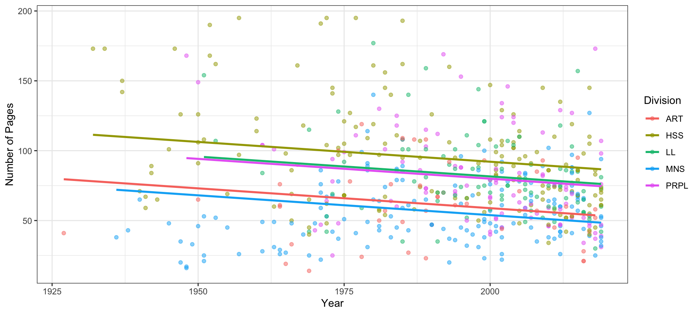
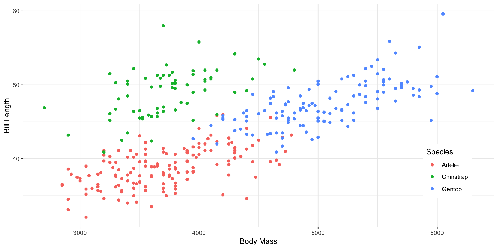

Inference for Regression II
Megan Ayers
Stat 141 | Fall 2026
Wednesday, Week 13
Announcements/Reminders
HW 9 posted (final homework assignment!)
Extra day on Lab 9: Due Wednesday 4/22
Reminder: You can submit missing assignments to me via email at any point for partial credit!
Goals for today
Stats courses advertisement for next year
Pick up from last lecture: inference for regression with bootstrap
Review multiple linear regression (MLR)
Discuss model selection
Stats Courses Next Year
FALL 2026:
- STAT 241: Data Science (Grayson)
- (prereqs: STAT 141)
- STAT 243: Statistical Learning (Grayson)
- (prereqs: STAT 141)
- STAT 291: Probability (Alex)
- (prereqs: Math 112 & 113)
SPRING 2027
- STAT 243: Statistical Learning (Megan)
- (prereqs: STAT 141)
- STAT 392: Mathematical Statistics (Lenny)
- (prereqs: STAT 141, STAT 291)
- STAT 394: Causal Inference (Megan)
- (prereqs: STAT 141, STAT 291)
New Statistics minor!! This requires:
- STAT 141
- STAT 243
- CSCI 121 or 122 or 221
- One additional 200+ level STAT course
- One 300+ level STAT course
Picking up from last lecture: bootstrap for regression inference
Review: Multiple Linear Regression
Example: Reed Theses
How does Page Count (\(y\)) vary by Year (\(x_1\)) and Division (\(x_2\))?
Example: Reed Theses
How does Page Count (\(y\)) vary by Year (\(x_1\)) and Division (\(x_2\))?
# A tibble: 6 × 7
term estimate std_error statistic p_value lower_ci upper_ci
<chr> <dbl> <dbl> <dbl> <dbl> <dbl> <dbl>
1 intercept 626. 127. 4.94 0 377. 875.
2 year -0.284 0.064 -4.45 0 -0.409 -0.159
3 division: HSS 33.2 5.08 6.55 0 23.3 43.2
4 division: LL 22.7 5.53 4.11 0 11.9 33.6
5 division: MNS -4.99 5.09 -0.98 0.327 -15.0 5.01
6 division: PRPL 21.1 5.51 3.83 0 10.3 31.9 Review: Multiple Regression Model
# A tibble: 6 × 7
term estimate std_error statistic p_value lower_ci upper_ci
<chr> <dbl> <dbl> <dbl> <dbl> <dbl> <dbl>
1 intercept 626. 127. 4.94 0 377. 875.
2 year -0.284 0.064 -4.45 0 -0.409 -0.159
3 division: HSS 33.2 5.08 6.55 0 23.3 43.2
4 division: LL 22.7 5.53 4.11 0 11.9 33.6
5 division: MNS -4.99 5.09 -0.98 0.327 -15.0 5.01
6 division: PRPL 21.1 5.51 3.83 0 10.3 31.9 We assume in the population, the response \(y\) is a linear function of the explanatory variables \(x_1,\dots,x_k\):
\[ y = \beta_0 + \beta_1 x_1 + \beta_2 x_2 + \dots + \beta_k x_k + \epsilon \]
But we estimate the model from the sample data that we actually have:
\[ \begin{aligned} \widehat{y} &= \widehat{\beta_0} + \widehat{\beta_1} x_1 + \widehat{\beta_2} x_2 + \dots + \widehat{\beta_k} x_k\\ &= 626 -0.284 \cdot \text{Year} + 33.2 \cdot \text{HSS} + 22.7 \cdot \text{LL} - 4.99 \cdot \text{MNS} + 21.1 \cdot \text{PRPL} \end{aligned} \]
Review: Interpretation
\[ \begin{aligned} \widehat{y} &= 626 -0.284 \cdot \text{Year} + 33.2 \cdot \text{HSS} + 22.7 \cdot \text{LL} - 4.99 \cdot \text{MNS} + 21.1 \cdot \text{PRPL} \end{aligned} \]
Intercept: The [expected/predicted] number of pages (y) for a thesis in year 0 and for the baseline division (Arts) is 626 pages, on average
Quantitative Slope: For a one-year increase in time, we [expect/predict] a 0.284 page decrease in thesis length on average, holding division constant.
Categorical Slope: Comparing a thesis in the HSS division to the baseline division (Arts), we [expect/predict] a 33.2 page increase in thesis length, on average, holding year constant.
Review: Conditions
We want linear regression models to satisfy 4 conditions:
- Linearity: The relationship between explanatory and response variables must be approximately linear
- Check using scatterplot/residual plot
- Independence: The observations should be independent of one another.
- Assess using context!
- Normality: The distribution of residuals should be normally distributed
- Histogram of residuals
- Q-Q plot of residuals
- Equal Variability: Variance of residuals should be roughly constant across data set.
- Check using scatterplot/residual plot.
Code for Checking Conditions
Residual plot: Residuals vs fitted values
Inference Procedures
- We can proceed with coefficient-level inference for Multiple Linear Regression exactly the same way we did for Simple Linear Regression!
- If ALL of the LINE conditions are satisfied
- Use theory-based inference!
- Confidence intervals and coefficient-level hypothesis tests given by
get_regression_table()function
- If at least Linearity and Independence are satisfied
- Resampling-based inference
- Use resampling methods to create confidence intervals and coefficient-level hypothesis tests
- More practice on next week’s lab
- ALWAYS
- Check adjusted \(R^2\) using
get_regression_summaries()function - Consider statistical AND practical significance
- Look at plots (e.g., exploratory plots, regression model plots, plots for assumptions)
- Check adjusted \(R^2\) using
Model Selection
Background: Model Selection
- Often, we have a more generic goal than learning about a specific coefficient:
- What’s the best model to predict \(y\) using some combination of variables \(x_1\), \(x_2\),,\(x_k\)?
- A few options:
- “Smallest” model: Intercept-only model (i.e., no predictors at all!)
- “Biggest model: Include all variables and their interactions
- Something in between?
Things to Avoid
There is no single correct way to pick a model…but there are “bad” ways
- Fitting the biggest model and only keeping variables with “significant” p-values
- Variables can be interrelated. We may remove groups of variables which add value to our model!
- Ideally, we should be able to justify why each variable is included in the model, beyond “the p-value told me to”
- Forward selection and Backward selection
- Some statisticians used to advocate for successively adding/removing variables based on highest/lowest p-values.
- This can be inaccurate, noisy, and messes with our type-I error rate
How to Engage in Model Selection
Three recommended tools for model selection:
- Context: Do we have a contextual reason to believe a variable should be included?
- Talk to experts; examine data plots; hypothesize
- Parsimony: Is there a simpler model that’s about as good?
- Examine data plots, see how \(R^2\) changes
- “Nested F-tests”: Hypothesis test for including groups of variables in our model
- We’ll learn about this today!
More Penguins
Let’s again predict Bill Length (\(y\)) with Species (\(x_1\)) and Body Mass (\(x_2\))

Context: We can see Body Mass and Species are related to Bill Length (and this probably aligns with our hypotheses)
Should we include interaction terms? (consider parsimony)
Nested F-Tests
The Nested F-Test is designed for these situations:
It compares two “nested” models:
\[ \begin{aligned} \text{"Small" Model:} \quad &y = \beta_0 + \beta_1x_1 +\dots+\beta_mx_m\\ \text{"Large" Model:} \quad &y = \beta_0 + \beta_1x_1 +\dots+\beta_mx_m + \beta_{m+1}x_{m+1} + \dots + \beta_px_p \end{aligned} \]
Hypotheses \[ \begin{aligned} H_0:& \text{ The small model is sufficient at explaining y}\\ H_a:& \text{ The large model is superior to the small at explaining y}\\ \end{aligned} \]
Models MUST be “nested”
Condition: “Large” model should satisfy LINE conditions
We’ll learn more about F-tests in the next lecture. For now, let R do the work.
Q: If we get a very small (\(< \alpha\)) p-value from our F-test, what should we conclude?
Nested F-Tests
Analysis of Variance Table
Model 1: bill_length_mm ~ body_mass_g + species
Model 2: bill_length_mm ~ body_mass_g * species
Res.Df RSS Df Sum of Sq F Pr(>F)
1 338 1952
2 336 1933 2 18.6 1.62 0.2We have a p-value of 0.20 \(\implies\) insufficient evidence to reject the null.
Thus, we should use the “small” model (without interaction effects!)
Word of Caution
Suppose you had fit the small and large models and compared each coefficient’s p-value:
| term | pvals SMALL model | pvals LARGE model |
|---|---|---|
| intercept | 0 | 0.00 |
| body_mass_g | 0 | 0.00 |
| species: Chinstrap | 0 | 0.12 |
| species: Gentoo | 0 | 0.92 |
| body_mass_g:speciesChinstrap | NA | 0.15 |
| body_mass_g:speciesGentoo | NA | 0.14 |
Think-Pair-Share:
What variables would you have kept if you only looked at p-values in the “large” model?
What do you notice? Are you surprised?
Can you explain this behavior?
Final Note: Model Selection
- There are tons of other tools for model selection:
- “Goodness-of-Fit” criteria, like AIC and BIC
- Penalized regression, like the “lasso” and “ridge regression”
- Cross validation
- These are covered in Math 243!
Next time
- More inference for regression
- Special case when we have 1 categorical predictor (ANOVA)